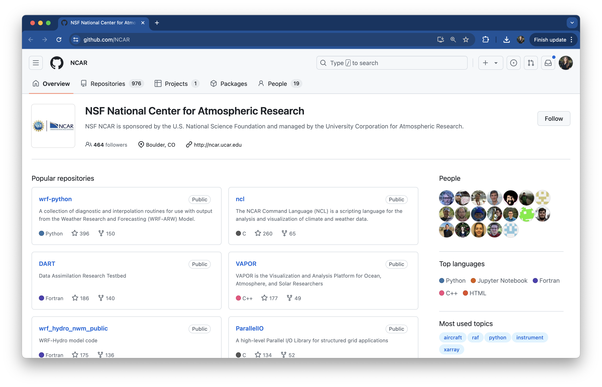

MEDS README Guidelines
What is a README?
Repository-level READMEs
You should always include a README in the root directory of your GitHub repositories. A README is typically the first item that visitors will see when they arrive at your repository. This makes them the perfect place to tell people what your project is, why it’s useful, and how to get started using it. What you include in a given README will look different depending on the project, but here are some guidelines for getting started:
Things you should always include in your GitHub repository READMEs:
Important
These core elements are required for all MEDS-related homework assignments and projects.
- A short, but descriptive title
- A README’s title is set to the repository name by default - change this!
- A brief explanation of the repository’s purpose
- Paragraphs or a bulleted list are both acceptable options
- You may include an image or logo that represents the project
- A concise description of what’s housed in the repository
- This includes information about the repository structure or file organization
- Details regarding data access
- Any necessary information on where data lives (e.g. is it housed in the repo, on a server, in a library/package etc.) and how to access it in order to run the code
- A list of authors or current contributors (for collaborative work)
- Consider hyperlinking collaborators’ GitHub profiles or other professional profile
- References
- In an appropriate, consistent format, including links.
- Don’t forget to add references for data sets too.
Things you should consider including, but may vary depending on the goals and complexity of the project:
- How to install or where to start
- Does your repository contain software that users will need to download or install? Do users access your software via a web browser? Do they need to install any dependencies? Do users need to clone your repository? etc.
- A quick demo
- Related to #1, above. It’s important to keep this concise! You may include images. Any long-form instructional documentation is best moved to the repository’s wiki
- What do do if a bug is spotted
- Make mention of GitHub issues and what information a user should include in an issue
- Contributing
- Do you welcome contributions from others? If so, its important to explain how one might contribute (e.g. fork & pull request, open an issue, both?)
- License
- Important for allowing others to reuse your work (which is copyrighted, by default; read about what it means when no license is available)
- What license you choose depends on what type of work you are trying to license. There are different licenses used for code/software, content, and data. Some helpful resources for getting started:
- Licensing code / software: check out this page,Choose an open source license, by GitHub. A couple popular options for software include MIT License and GNU GPLv3
- Licensing content (i.e. non-software): check out this page, About CC Licenses, by Creative Commons. A few good CC options for non-software content include CC BY, CC BY-SA, and CC BY-NC.
- Licensing data: You’ll chat more about this in EDS 213 (Databases and Data Management)!
- Acknowledgements
- Provide reference to any other individuals or sources that supported the development of the repository. For example, did you fork an existing repository? Did the work have any funding sources? Were there individuals you consulted with or were inspired by?
Example GitHub repository READMEs:
Each project is different and so is its README! As you browse through different repositories you will see that not all of them have the same sections. However, they all offer a clear starting point for a newcomer to understand what the project is about. Here are some GitHub repositories with READMEs we like:
- strava-dashboard, by Samantha Csik - code for a Shiny dashboard
- EDS-240-data-viz, by Samantha Csik - code for a course website
- thomas-fire, by Anna Ramji - a MEDS student project
- xarray - a Python package for working with multidimensional arrays and datasets
- palmerpenguins - an R package that contains teaching data
- metajam - an R package for downloading and reading in metadata from repositories in the DataONE network
- awesome-readme, by Matias Singers - a curated list of awesome READMEs
Organization-level READMEs
You have the option to add both public (visible to anyone) and private (visible only to organization members) profile READMEs to separately serve each of those communities. The content you choose to include in an organization profile README is quite flexible, but it’s often valuable to add the purpose of the organization, any high-level summary information, and links to important websites / external resources / specific repositories within the organization. Alternatively (or in addition to), you can update your organization’s profile information, including a title and description, as well as relevant links. For example, see NCAR’s GitHub organization:
In EDS 411 (Capstone Project), you’ll create a GitHub organization to house all your Capstone-related repositories and code. You’ll also be required to include specific information in your organization’s README (you’ll talk much more about the required checklist in EDS 411!). In the meantime, check out a couple great examples of MEDS Capstone organizations, along with a few non-MEDS organizations, below.
Example GitHub organizations with added profile information:
- UCSB MEDS, by the Master of Environmental Data Science program (a place where MEDS admin organize teaching materials and other related content)
- The Nature Conservancy, by TNC (scripts and apps from TNC scientists and geologists)
- LTER, by the Long Term Ecological Research Network (a home for LTER projects and code)
Example (public) GitHub organization READMEs:
- Outdoor Equity, by Halina Do-Linh & Clarissa Boyajian (MEDS 2022 Capstone project)
- CASAschools, by Liane Chen, Charlie Curtin, Kristina Glass & Hazel Vaquero (MEDS 2024 Capstone project)
- NMFS Open Science, by the National Marine Fisheries Service (contains work which supports open science and open data literacy across NOAA fisheries)
- NASA Goddard Institute for Space Studies, by NASA (laboratory in the Earth Sciences Division of NASA’s Goddard Space Flight Center)
- GitHub, by GitHub (yes, GitHub is built on GitHub!)
Wikis
While READMEs are used to provide a quick overview of what your project can do, wikis are used to provide additional documentation. From GitHub Docs:
“You can use your repository’s wiki to share long-form content about your project, such as how to use it, how you designed it, or its core principles”
A great way to streamline a repository’s README is to move any documentation-style information to a wiki, and then link to the appropriate wiki page from your README. Each wiki page should focus on a single topic.
Example GitHub repository wikis:
- Openscapes website wiki, by Openscapes (a user-guide of sorts; notes and conventions for Openscapes website maintainers and contributors)
- NCEAS Roundtable (August 2023) workshop materials wiki, by Samantha Csik (setup instructions for workshop participants)
{xaringan}wiki, by Yihui Xie (includes tips and further customizations that aren’t covered in the official R package documentation)